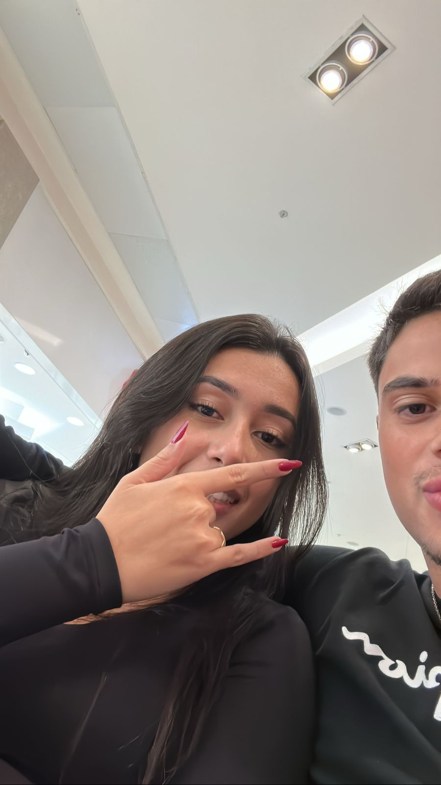
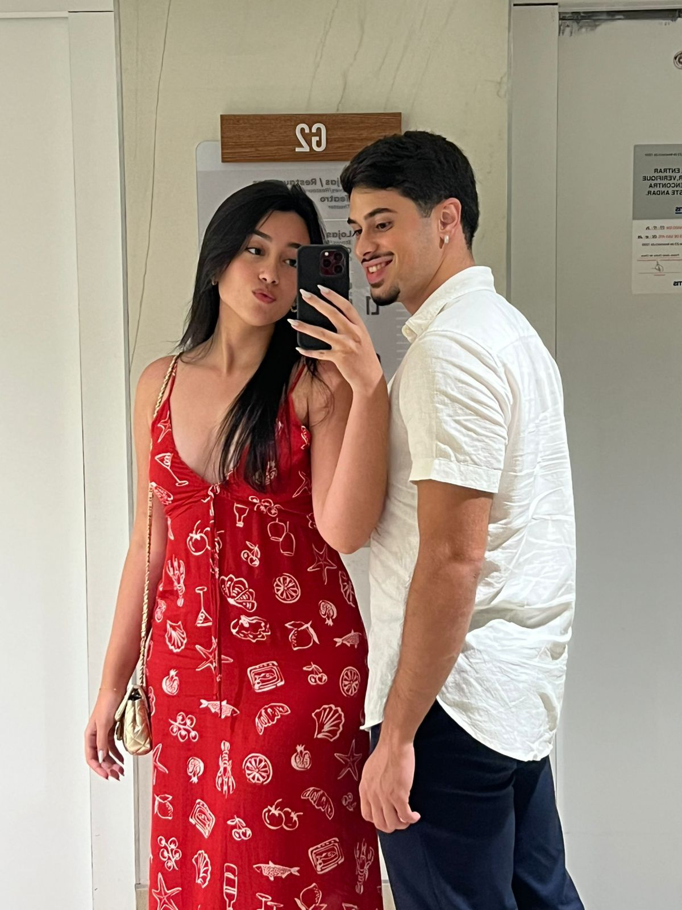
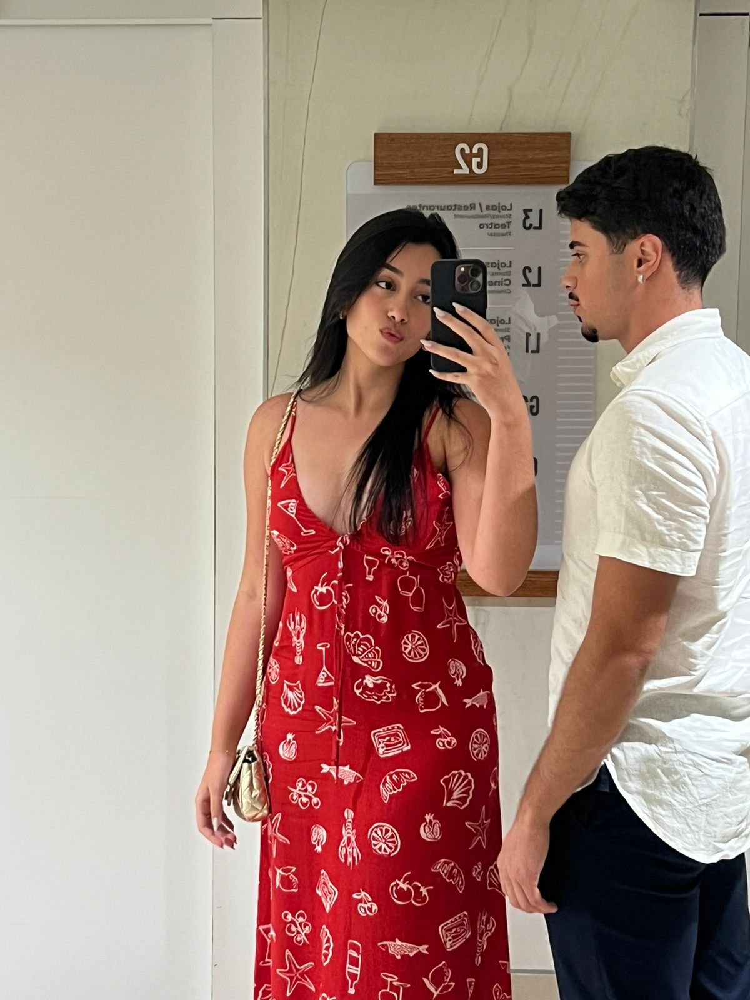
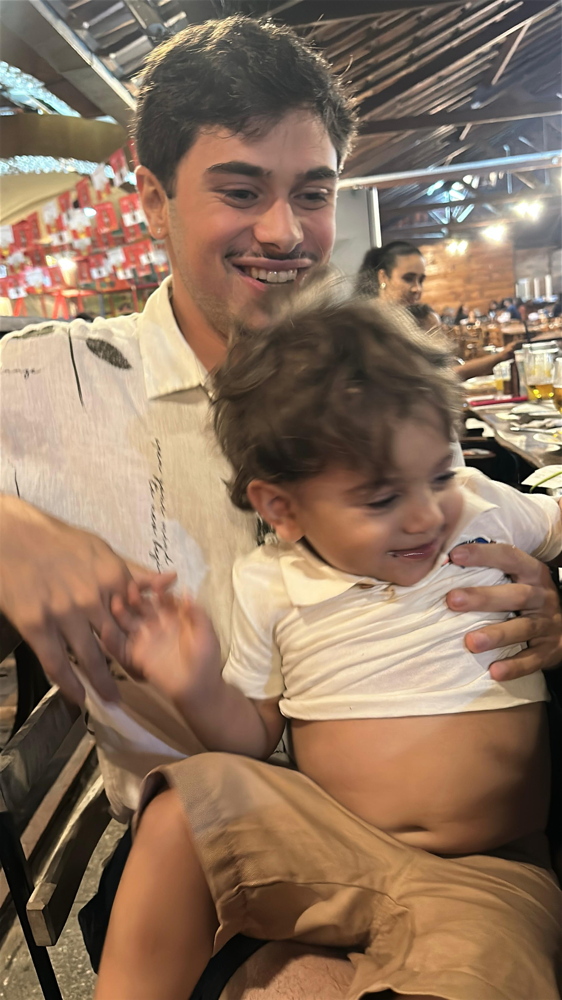
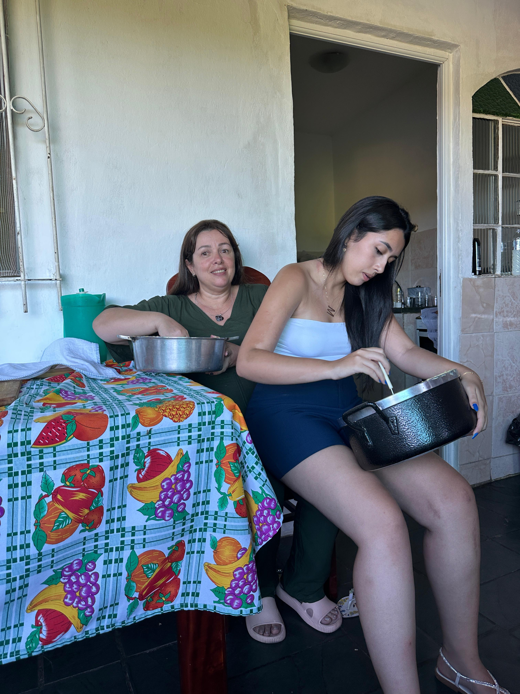
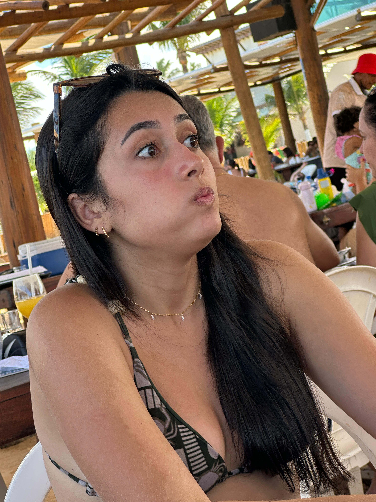
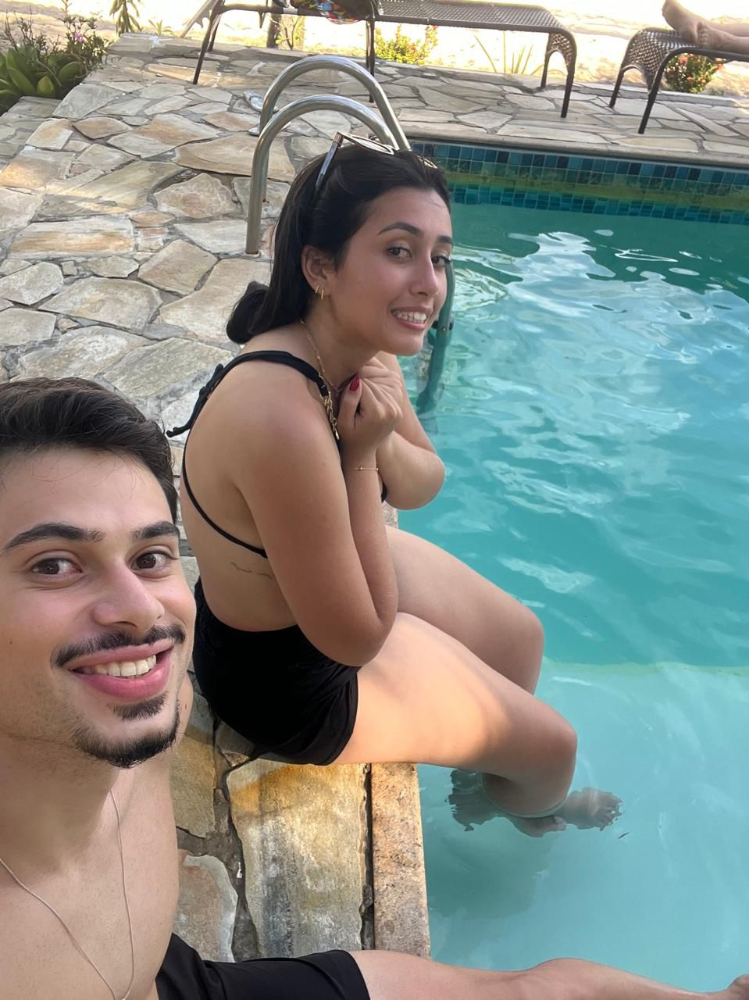
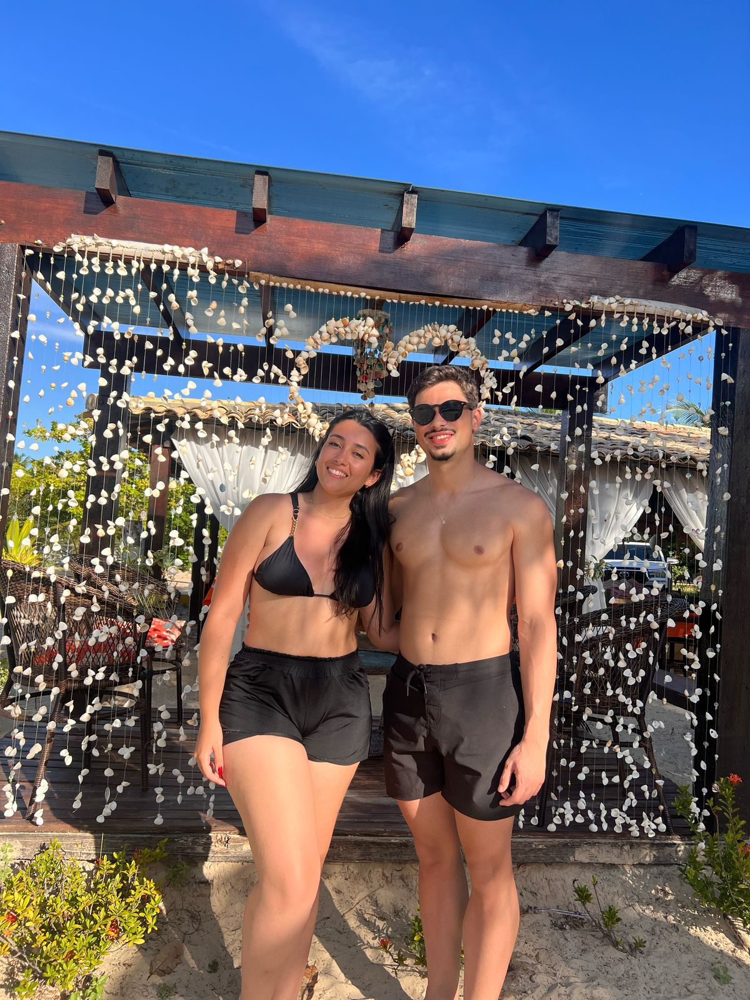
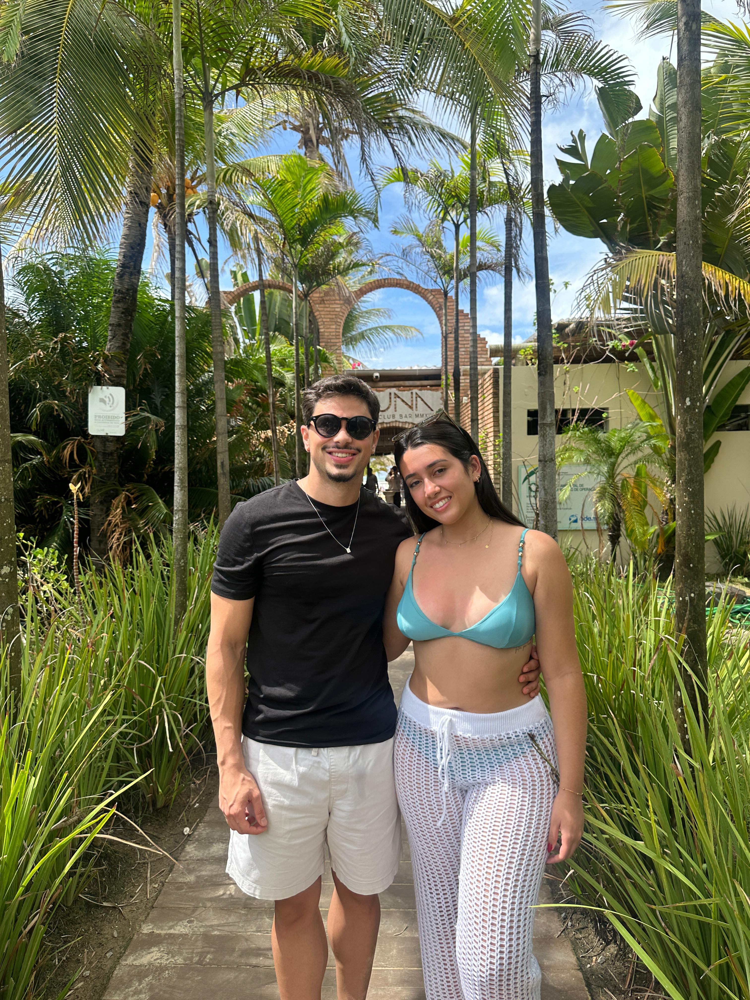
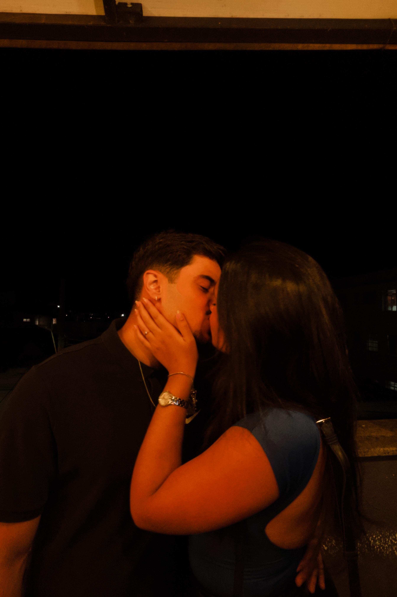

Primeira vez que falei EU TE AMO!
Dia que te entreguei minha primeira cartinha










Marcelly, eu particulamente me imaginei nesse momento milhões de vezes e para mim não poderia ser diferente, cada momento que vivemos nesses últimos anos marcou minha vida e posso falar abertamente que sou a pessoa mais feliz do mundo ao seu lado. Sei que esse é só o começo de tudo e que o futuro nos aguarde. Te amo minha morena!❤️